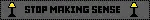

We met in March 2022 as freshmen and, since then, we've moved through life as an unwavering unit. Now, a little under four years later, we're showing the pond put between us what's what.
Get over here, we're getting married in February. Papers get formerly signed in super secret, then it's straight to party town.
Chicago, USA
Date: February 21st, 2026
Time: 6:00pm - 11:00pm
Norwich, UK
Date: 14th March, 2026
Time: 7:00pm - 11:00pm
While these aren't formal "receptions", we would still appreciate it if you RSVP before Christmas! Thank you!
RSVP FormBecause this is a public webpage, locations will be revealed in the RSVP form (use the password we sent/included in the invite!)
We're hosting two separate parties. You'll be able to choose which one to attend in the RSVP form:
Chicago, USA [February 21st, 2026]
06:00pm - 07:00pm Potluck
07:00pm - 08:00pm Toasts, sentiments, group photos
08:00pm - 11:00pm Duck Game + Jackbox
If you're showing up to the potluck, store-bought and home-cooked meals are both welcome, all we ask is that you contribute something. You can sign up in our RSVP form so we can organise meals.
There will be champagne (the bride wanted champagne), there will be music, and there will be Duck Game.
Norwich, UK [14th March, 2026]
07:00pm - 08:00pm Welcome drinks
08:00pm - 09:00pm Toasts, sentiments, group photos
09:00pm - 11:00pm "Music on, world off"
A party party at NR3; private bar and all. If you're travelling into Norwich, there's a handful of accommodations within the city centre. No meals, just drinks and love.
The venue doesn't have a screen so no Duck Game or Jackbox ("awww...") but if you've got a projector and are itching to make it work, let us know ("hoorah!")
RSVP FormDrop in at whatever time works for you, but please be here for the photos and sappy sentiment stuff.
Actual Event Stuff
The Wedding Meta
"I have another question!"
Talk to whoever on wherever; you know our socials. Alternatively: bramhamfraher@gmail.com
 <-- This is us
<-- This is us
PSA from Fletcher's big belly -->
*ੈ ✩ ‧ ₊ ˚ ༺ ☆ ༻ *ੈ ✩ ‧ ₊ ˚

 (plural)
(plural)
<-- We luv Talking Heads
Head -->
WE LOVE OUR FRIENDS WHEN THEY SMILE

ING FRIENDS
 <-- Biden!
<-- Biden!
I followed the rules, homies.
|
V
This webpage is HTML/CSS valid (w3), with a lot of care being put into it being responsive, accessible, and kick-fucking-ass. All assets used are either my own or from public domain.